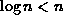
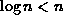
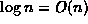
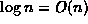
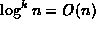
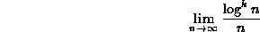
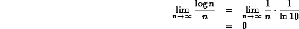
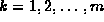
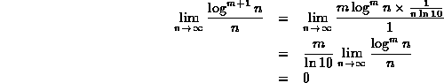
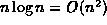

Data Structures and Algorithms
with Object-Oriented Design Patterns in C++
Data Structures and Algorithms
with Object-Oriented Design Patterns in C++
In this section we determine the asymptotic behavior of logarithms.
Interestingly,
despite the fact that  diverges as n gets large,
 for all integers
diverges as n gets large,
 for all integers  . Hence, .
Furthermore, as the following theorem will show,
. Hence, .
Furthermore, as the following theorem will show,
 raised to any integer power
raised to any integer power  is still O(n).
is still O(n).
Theorem For every integer, .
extbfProof
This result follows immediately from Theorem  and the observation that for all integers
and the observation that for all integers  ,
,
This observation can be proved by induction as follows:
Base Case Consider the limit

for the case k=1.
Using L'Hôpital's rule we see that
we see that

Inductive Hypothesis
Assume that Equation holds for .
Consider the case k=m+1.
Using L'Hôpital's rule we see that

Therefore, by induction on m, Equation
holds for all integers  .
.
For example,
using this property of logarithms
together with the rule for determining the asymptotic behavior
of the product of two functions (Theorem ),
we can determine that since ,
then .
 Copyright © 1997 by Bruno R. Preiss, P.Eng. All rights reserved.
Copyright © 1997 by Bruno R. Preiss, P.Eng. All rights reserved.